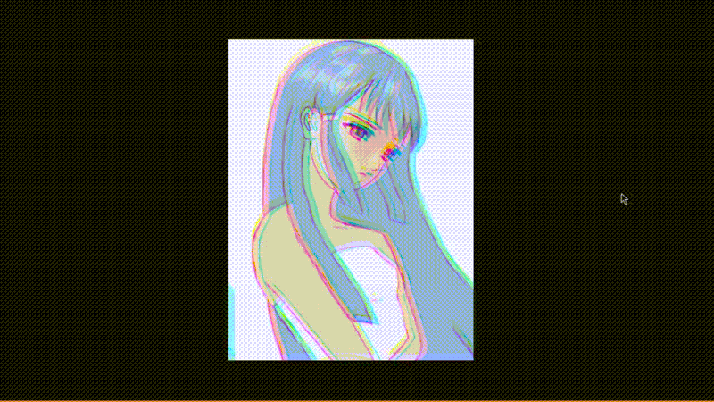

Prototype of a Visual Novel Engine writen in OpenGL using C/C++
This prototype is in very early development stage. In it's current state, it's basically just a sprite renderer, written using function oriented design approach.
It's meant to arising need in the visual novel space that I've noticed. It's going to give creators full control without forcing them to think like programmers. Instead of fixed layouts, everything is build from modular components, such as text boxes, sprites, UI elements and controls that can be placed, grouped and reused freely.
I've decided to build it in OpenGL to make it very performant with a lot of opportunity for visual effects using shaders. On top of that, it's possible that it will include 3D capabilities in the future, but that idea is still a discussion.
So far, all this project has accomplished is a simple functional designed sprite renderer, with some cool and simple shader effects, such as chromatic abberation, mouse tracked illumination, as well as the edge detection using Sobel operator.
Additional plan is for it to be fully free and open source, and available on both, Windows and Linux platforms. Both builds have been created and tested successfully.